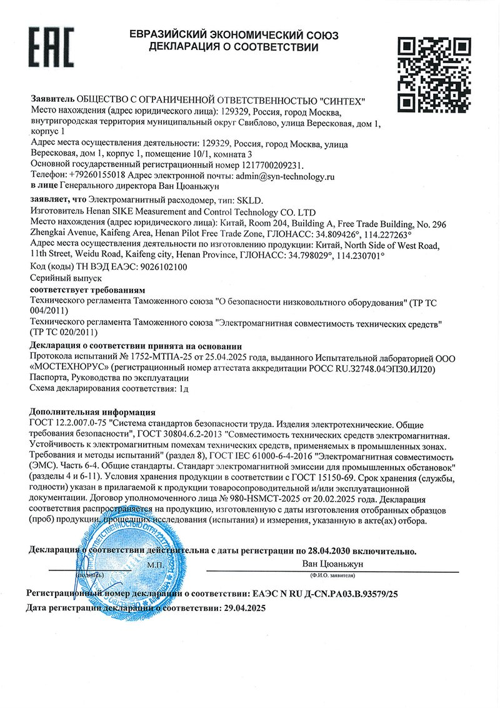
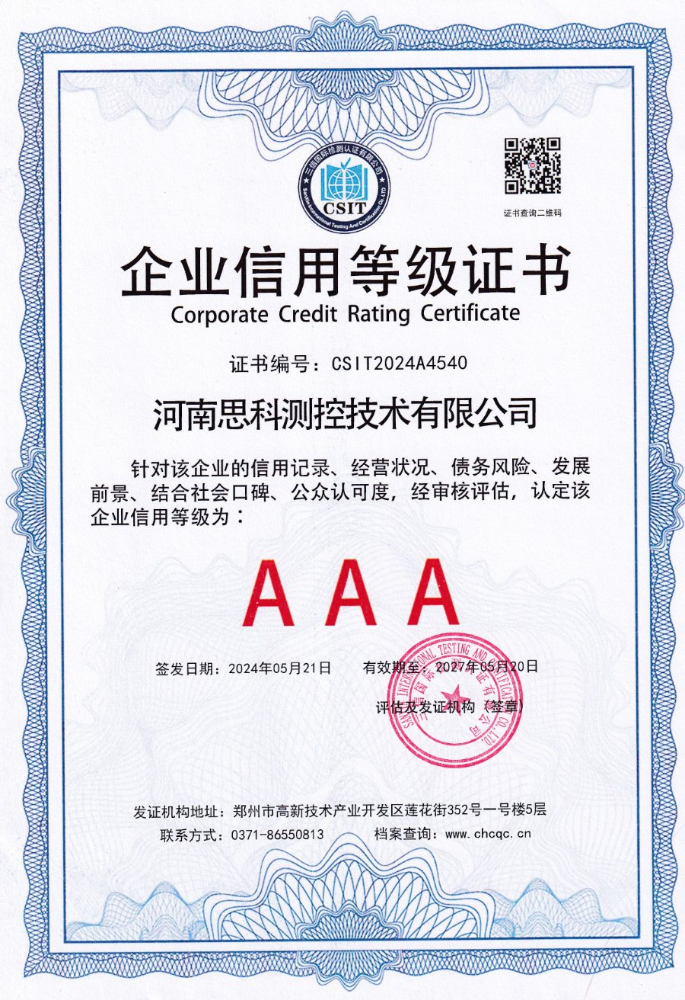

20000m²厂区占地面积
9款在产主力仪表
8大服务工业领域
18年行业深耕经验
产品中心
按测量类别选择仪表
三大产品线覆盖工业现场常见的流量测量与液位测量需求，可按介质与工况组合选型。
主力产品
标准节流装置与液位仪表
每款产品均依据现场工况选型，配套完整的选型参数与安装说明。


工厂与团队
20000 m² 自有厂区，从元件到整机组装
公司管理规范，技术力量雄厚，已经通过 ISO9001 质量体系认证；设备先进，检测手段齐全完善，是产品和服务质量的可靠保证。团队成员拥有多年的仪表行业专业技术背景，来自国内仪表行业的一线骨干。
- 技术研发部完成转换器配型与自产传感器开发
- 检测手段齐全，产品出厂逐台标定
- 商务、技术、生产、售后、内勤、管理六位一体

企业文化
正直、合作、创新
三条准则决定我们如何对待客户、伙伴与每一天的产品。
正直
遵守国家法律与公司制度，绝不触犯企业高压线；做人德为先，坚持公正、诚实、守信等为人处事的重要原则；用正直的力量对周围产生积极的影响。
合作
具有开放共赢心态，与合作伙伴共享行业成长；具备大局观，能够与其他团队相互配合，共同达成目标；乐于分享专业知识与工作经验，与同事共同成长。
创新
创新的目的是为客户创造价值；人人皆可创新，事事皆可创新；敢于突破，勇于尝试，不惧失败，善于总结。
ISO9001
质量体系认证
38岁
团队平均年龄
3A
计量器具型式批准
CE
产品出口认证
企业荣誉
资质与认证
覆盖 CE、计量检定、型式批准与高新技术资质。

2026最新版CE证书

010DOC证书 节流装置

004020DOC证书 电磁流量计

2026最新三体系认证证书

2025大水流量标准装置检定证书

2024最新3A证书

2024金属转子防爆证

2023高新技术企业证书
服务行业
客户覆盖全国工业现场
冶金、石油、电力、化工、环保、水利等行业客户长期采购。
- 钢铁冶金
- 火力发电
- 石油化工
- 煤化工
- 环保供水
- 市政供热
- 医药食品
- 造纸水泥